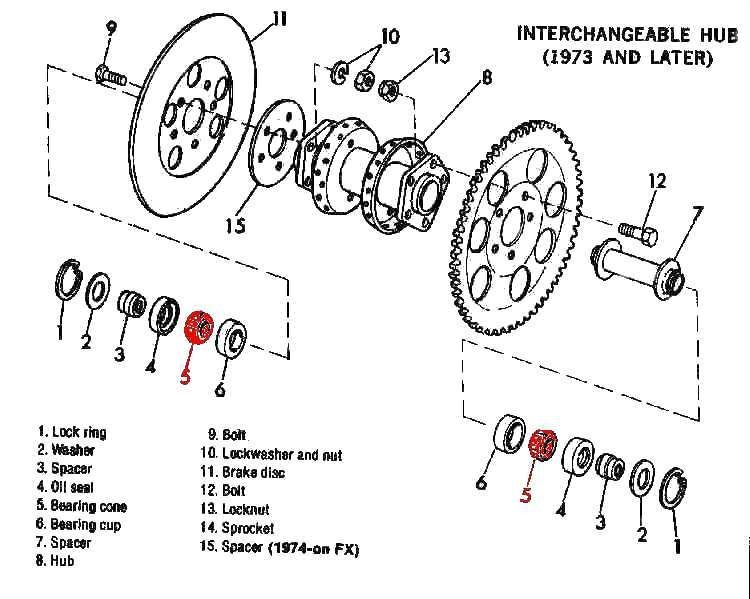

Home mechanic (basic tools) · Time: 15 to 30 min (estimate) (estimate)
Each wheel turns on two ball bearings pressed into the hub. A worn bearing lets the wheel move sideways, makes a rumble or grinding noise and can make the bike weave. This check tells a worn bearing apart from a loose axle, a dragging brake or play somewhere else.
Safety
- Lift the wheel off the ground with the bike stable. Keep fingers out of the spokes, disc and chain while the wheel turns.
- A wheel with clear side play is not safe to ride far. Have it fixed before riding at speed.
You need
- A way to lift each wheel: centre stand plus a weight on the rear seat for the front, a stand or block for the rear.
- Spanners and a torque wrench to check the axle nut first.
Steps: on the bike
- Check the axle nut is tight to the bike's value. A loose axle feels like a bad bearing. (K-Light 125 front axle nut 75 to 88 N·m. Rear axle: see the conflict note on Remove and refit the rear wheel.)
- Lift the wheel. Hold it at the top and bottom of the tyre. Push the top away from you and pull the bottom toward you, then the other way. Any knock or movement is play.
- If there is play, have a helper hold the brake on. Front: if the knock stays, look at the fork legs and the steering head too (Check the steering head bearings). Rear: hold the swingarm with one hand while you rock the wheel; movement of the swingarm itself is swingarm play.
- Spin the wheel by hand and listen with your ear near the hub. Put your fingertips on the fork leg or swingarm. A rumble, grinding or a rough feel is a bearing.
- Rule out other noises: a brake that rubs makes a regular swish (Check for brake drag). On the rear, lift the chain off the sprocket or slacken it and spin again. On the front, a dry mechanical speedo drive can also squeak or bind.
Steps: off the bike
- Remove the wheel (front, rear).
- Put a finger in the inner race of each bearing and turn it. It should turn smoothly with no catching or grit.
- Try to move the inner race up, down and sideways. You should feel no free movement.
- Look at the seals: torn seals or rust streaks mean water has entered.
- Check the spacer between the bearings is present. The K-Light fault chart lists a missing hub spacer as a cause of dragging wheels.
Check your work
- You know whether the play or noise comes from the bearing, the axle, the brake, the chain, the swingarm or the steering head.
If it did not fix the problem
- Rough or loose bearing: Replace wheel bearings. Replace both bearings in the hub.
- Bearings good but wheel wobbles: Check a wheel for runout.
- Electric hub motor: Check hub motor bearings and play.
Reference values (K-Light 125)
| Item | Value | Source |
|---|---|---|
| Front wheel bearing | 6202-2RS (sealed) | K-Light 125 manual, PDF p. 130 |
| Rear wheel bearing | 6303-2RS (sealed) | K-Light 125 manual, PDF p. 159 |
| Front axle nut | 75 to 88 N·m | K-Light 125 manual, PDF p. 135 |